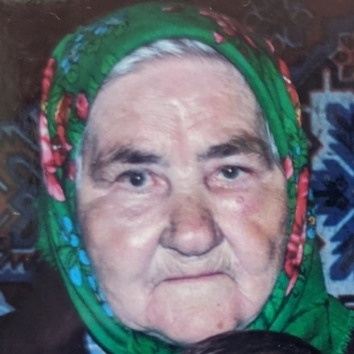

Кайдаш (Горянская) Надежда Гаврилова
Рисунок8 (фрагмент). Примерно 1995г.
.
.
Родилась: 23.09.1914, с. Кайдашовка Черниговскя обл.
Умерла: 31.08.1996
Продолжительность жизни: 81
Основное занятие: Помогала мужу в пчеловодстве
В ее огороде рос мак, который ели все внуки и не стали наркоманами…
Помогала мужу в пчеловодстве
Говорила: буряк (свёкла), блыкнуло наче солнце (сверкнуло как солнце)
В кармане у нее всегда был ключ от комода, в котором лежали ценности.
Отец: Горянский Гаврило
Мать: Маруся
Брат: Горянский Было 5-о детей
Муж: Кайдаш Семен Иванович
Сын: Кайдаш Александр Семенович
Дочь: (Кайдаш ) 9 детей
![Рисунок17[1]](io31.jpg) Рисунок17[1]. Рисунок17[1].  WhatsApp Image 2020-06-08 at 18.09.07 (1). WhatsApp Image 2020-06-08 at 18.09.07 (1). |